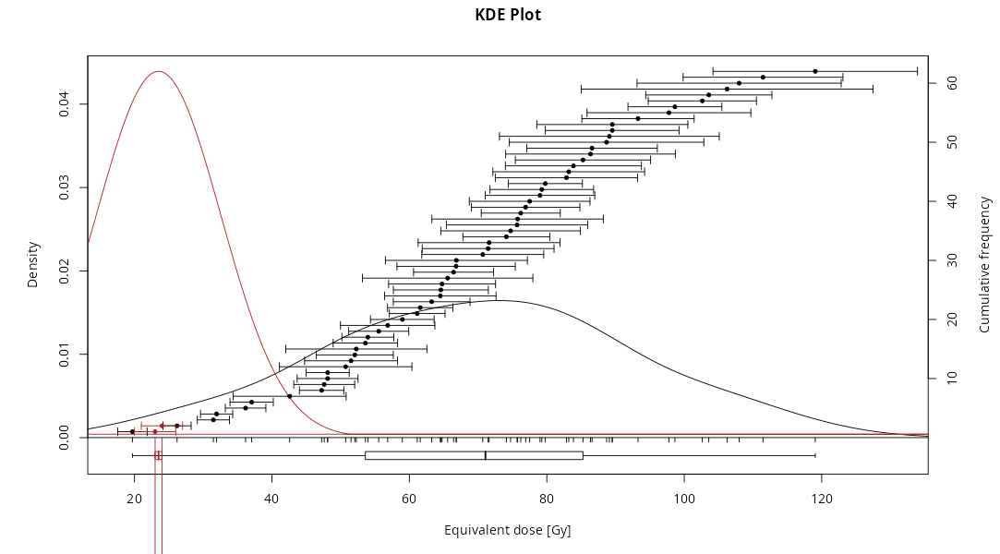
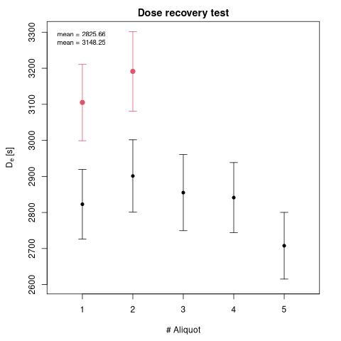
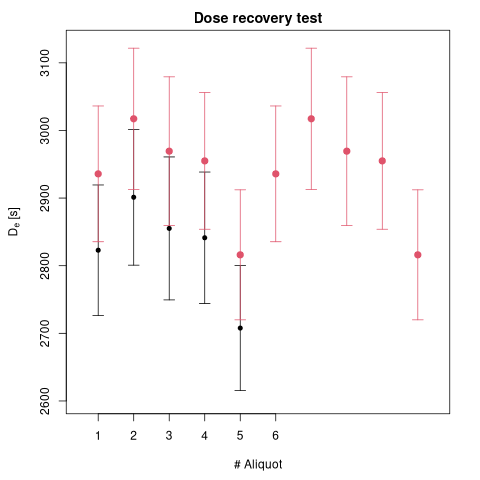

Luminescence Release 1.2.1
Only two weeks after our previous release, are proud to announce the release of version 1.2.1 of the Luminescence R package. This is a minor release made upon request by CRAN, as we’ll explain further down. Nonetheless, there are a few interesting changes and some regression fixes (mainly cosmetic) that make it worthwhile to update. In total we solved 25 issues in 60 commits.
Updates to DRAC
As some point during the last couple of weeks, theDose Rate and Age Calculator (DRAC) hosted by the University of Aberystwyth was upgraded from version 1.2 to version 1.3 (read here to see what has changed in this revision)
From our side, we only needed to update our code so that we can now accept
a template file with header pointing to version 1.3. In this sense, the timing
of our v1.2.1 release was perfect to keep our use_DRAC() function fully
working with the updated calculator.
Corrections in Lx/Tx calculation
The computation of the Lx/Tx ratios in Luminescence occurs inside the
calc_OSLLxTxRatios(). Although this is not a function that a user needs to
call directly very often, it’s one that is central to a number of other widely
employed functions, such as analyse_SAR.CWOSL() and analyse_FadingMeasurement().
Computation of overdispersion
The calculation of the Lx/Tx values had a couple of long-standing bugs that
affected the results. These were spotted and fixed by Andrzej Bluszcz, who has
been dissecting the implementation of Galbraith’s overdispersion (sigmab)
calculation in our calc_OSLLxTxRatios() function.
In that computation, a number of intervals (of length corresponding to the signal integral) are generated, and the contribution of the background integral in each interval is summed up. However, we used to generate intervals that overlapped by one element (the last value in an interval was the same as the first value of the next interval), so that some points contributed twice. This was fixed in issue 1495.
Moreover, the function was also mistakenly reporting sigmab as
abs(var(Y.i) - mean(Y.i)) when instead it should have truncated negative
values to zero, as in max(var(Y.i) - mean(Y.i), 0). This means that if the
mean counts in the intervals are larger than their variance (which is the case,
for example, when the counts follow a Poisson distribution), sigmab will now
be computed to be 0 (as it would be expected by the theory), instead of a
possibly large positive value. This was fixed in issue 1491.
These changes affect results generated by analyse_baSAR(),
analyse_FadingMeasurement(), analyse_SAR.CWOSL(), analyse_pIRIRSequence()
and plot_DetPlot() as they use calc_OSLLxTxRatios(). Therefore, results
will no longer correspond exactly to those produced with previous versions,
although we don’t expect differences to be too large.
Computation of errors when background_integral = NA
In v1.2.0 we added support for setting background_integral = NA, which can
be used to disable the background integral subtraction. However, when we first
introduced this feature, the Lx/Tx errors were set to NA, which in turn led
to miscomputing the De.error as 0 when the dose-response curve were fitted.
With the changes introduced in issue 1504, the error calculation is
instead carried out in a simplified form only considering the error component
coming from the signal integral. This means that functions such as
analyse_SAR.CWOSL() can produce a correct De.error also in this setting.
Regression fixes
In this release we discovered a few graphical bugs that occurred under some very specific circumstances. Some of these were due to recent code changes that regressed the behaviour of the function in these cases.
plot_KDE()
In v1.2.0 we fixed a bug in plot_KDE() that caused the rug lines to
be oversized if a dataset was particularly long. While the fix worked well in
the normal case when only one dataset is provided, it caused the rug to have
uneven tick lengths if a list of datasets of different size was provided.

In this case, fixed in issue 1508, if the size difference in the datasets was pronounced, the smaller one would produce very long rug lines.
plot_DRT()
While playing with this function via RLumShiny, we discovered a regression, also introduced in v1.2.0, that caused the summary text to appear in black when it should have been using the same colour as the data points. This happened only in the very specific case of a dataset that contained a number of points equal to the total number of datasets in the input list.

For example, as show the plot above, if the user submitted a list of two datasets and the second contained only two points, then the summary text would not respect the colour choice. This was fixed in issue 1516.
A different regression, introduced in v1.1.2, caused the na.rm
argument to behave in the opposite way as expected. This has been corrected in
issue 1520 so that the default setting of na.rm = FALSE will not
remove the NA values. Moreover, the function no longer crashes if all errors
are NA and na.rm = FALSE.
Lastly, although not technically regressions, there are two more fixes worth mentioning, which address some long-standing bugs that were uncovered while looking carefully at this function’s code:
- issue 1518: When a list of datasets was provided, the x-axis ticks were drawn only up to the size of the first dataset:

- issue 1522: The function crashed if the data frames in the input list didn’t have names or if they contained a different number of columns.
Why a new release so soon
When a package is uploaded to CRAN, a number of automated tests are carried
out. These range from checking for syntax errors in the code, to verifying that
the documentation is complete and up to date, to running the examples. These
checks are quite thorough but also quite simple to get right in most cases.
What makes them easy, is that they can be run from the command line via R CMD check or directly from R with devtools::check().
For a package that, like Luminescence, is used by other packages, CRAN
performs the so called “reverse dependency check”, to verify that an update to
a package doesn’t cause failures in the packages that use it. This step is
slightly more involved, as the dependencies must be downloaded and built
against the new package version.
In some cases, getting the reverse dependency check to pass requires coordination with other package maintainers, as it happened for us in the previous release. As that release introduced some breaking changes that affected the OSLdecomposition package, we had to wait for a new version of that to reach CRAN before we could submit our package. All in all, that process worked out smoothly.
However, a couple of days after the v1.2.0 release, we received a message from CRAN asking us to fix some C++ code and to resubmit within two weeks. That was the result of yet another automated check: this one, however, is performed after a package has already been published on CRAN, and it generally happens quite silently, so that it was not even obvious that it happened at all.
It turns out that packages that include C++ code are verified with the valgrind memory debugger. This is a tool that instruments the C++ code so that each memory allocation and deallocation can be inspected in detail. This allows, for example, to discover cases when a variable is used before being initialised.
That’s exactly what our problem was:
Conditional jump or move depends on uninitialised value(s)
at 0x17CC245E: analyse_IRSARRF_SRS (packages/tests-vg/Luminescence/src/src_analyse_IRSARRF_SRS.cpp:84)
by 0x17CB49EC: _Luminescence_analyse_IRSARRF_SRS (packages/tests-vg/Luminescence/src/RcppExports.cpp:67)
by 0x4A7FCD: R_doDotCall (svn/R-devel/src/main/dotcode.c:766)
by 0x4E2083: bcEval_loop (svn/R-devel/src/main/eval.c:8682)
by 0x4F21D7: bcEval (svn/R-devel/src/main/eval.c:7515)
by 0x4F21D7: bcEval (svn/R-devel/src/main/eval.c:7500)
by 0x4F250A: Rf_eval (svn/R-devel/src/main/eval.c:1167)
by 0x4F428D: R_execClosure (svn/R-devel/src/main/eval.c:2389)
by 0x4F4F46: applyClosure_core (svn/R-devel/src/main/eval.c:2302)
by 0x4F781E: Rf_applyClosure (svn/R-devel/src/main/eval.c:2324)
by 0x4F781E: R_forceAndCall (svn/R-devel/src/main/eval.c:2456)
by 0x42C17E: do_lapply (svn/R-devel/src/main/apply.c:75)
by 0x53AF14: do_internal (svn/R-devel/src/main/names.c:1411)
by 0x4E3EB1: bcEval_loop (svn/R-devel/src/main/eval.c:8152)
Uninitialised value was created by a stack allocation
at 0x17CC226A: analyse_IRSARRF_SRS (packages/tests-vg/Luminescence/src/src_analyse_IRSARRF_SRS.cpp:34)
Now, that output is quite scary, as it traces how a certain piece of memory
is passed from function to function within R itself. Luckily, it points out
the precise line number of the first occurrence in which an uninitialised
block of memory is read. In the specific, this happened in the Luminescence
C++ function that powers analyse_IRSAR.RF():
at 0x17CC245E: analyse_IRSARRF_SRS (packages/tests-vg/Luminescence/src/src_analyse_IRSARRF_SRS.cpp:84)
Indeed, parts of that function were rewritten in issue 1254 to remove
our dependency on the RcppArmadillo package. In particular, the allocation
from some work arrays was changed from
arma::vec::fixed<two_size> t_leftright;
to
double t_leftright[two_size];
This change seems quite harmless, however it hides a potential bug that
valgrind was able to spot. The issue is that the allocation with arma::vec
initialises the vector elements to zero, while the manual allocation doesn’t.
In general, this would not be a problem, as the initialisation was done a few
lines below:
if (v_length > 1) {
t_leftright[0] = v_length/3;
t_leftright[1] = 2 * v_length/3;
}
However, the values would still be uninitialized in the extremely unlikely case
when v_length = 1, which happens only if analyse_IRSAR.RF() is called with
n.MC = 1 (that is, only one Monte Carlo iteration).
The fix, documented in issue 1479, was actually very simple, as it only required intialising the work array upon allocation:
double t_leftright[two_size] = {};
The last step was to try running valgrind locally on the same example and
see if the previously reported problem was correctly fixed. This required
installing valgrind itself, then open an R session with this command:
R --debugger=valgrind
When all memory allocations are tracked, the execution becomes much slower, so
that even loading the Luminescence package takes several seconds. However,
with a bit of patience, we could verify that the correction above was
sufficient to fix the problem reported by CRAN.
Upcoming work
This release came as a suprise. We expect to be back on the usual release schedule, during which we are planning to add some new functionality as well as continuing to ensure stability and correctness of the package.